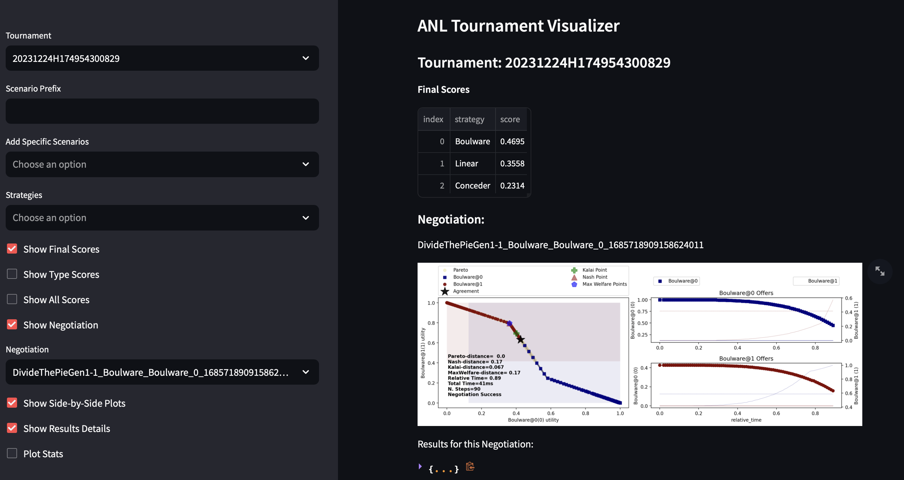

ANL Documentation
This repository is the official platform for running ANAC Automated Negotiation Leagues (starting 2024). It will contain a package
called anlXXXX for the competition run in year XXXX. For example anl2024 will contain all files related to the
2024's version of the competition.
This package is a thin-wrapper around the NegMAS library for automated negotiation. Its main goal is to provide the following functionalities:
- A set of utility functions to run tournaments in the same settings as in the ANL competition. These functions are always called
anl20XX_tournamentfor year20XX. - A CLI for running tournaments called
anl. - A place to hold the official implementation of every strategy submitted to the ANL competition after each year. These can be found in the module
anl.anl20XX.negotiatorsfor year20XX.
The official website for the ANL competition is: https://scml.cs.brown.edu/anl
Installation
You can also install the in-development version with::
Documentation
- Documentation for the ANL package: https://yasserfarouk.github.io/anl/
- Documentation for the NegMAS library: https://negmas.readthedocs.io
CLI
After installation, you can try running a tournament using the CLI:
To find all the parameters you can customize for running tournaments run:
You can run the following command to check the versions of ANL and NegMAS on your machine:
You should get at least these versions:
Other than the two commands mentioned above (tournament2024, version), you can use the CLI to generate and save scenarios which you can later reuse with the tournament2024 command using --scenarios-path. As an example:
anl make-scenarios myscenarios --scenarios=5
anl tournament2024 --scenarios-path=myscenarios --scenarios=0
myscenarios. The second command will use these scenarios without generating any new scenarios to run a tournament.
Visualizer
 ANL comes with a simple visualizer that can be used to visualize logs from tournaments after the fact.
To start the visualizer type:
This will allow you to select any tournament that is stored in the default location (~/negmas/anl2024/tournaments). You can also show the tournament stored in a specific location 'your-tournament-path' using: